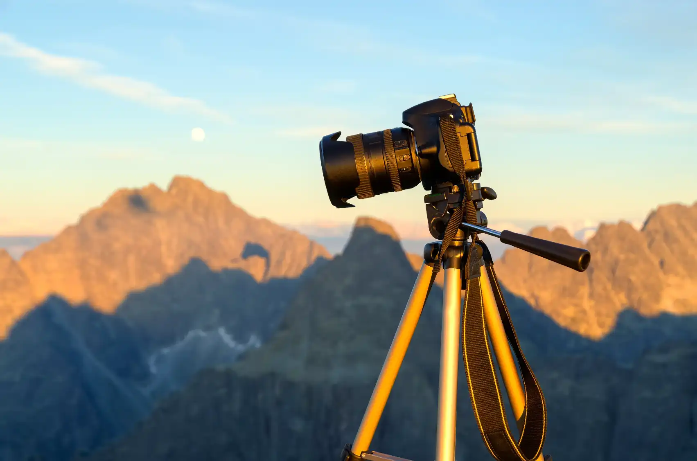

Cámaras y objetivos para
fotografía de naturalezamore_vert
Cámaras y objetivos para fotografía
de naturalezaclose
Descubre cuales con las mejores cámaras objetivos y teleobjetivos para iniciarte en la fotografía de naturaleza gastando poco dinero.
Ver